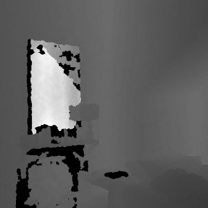
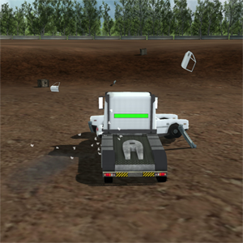
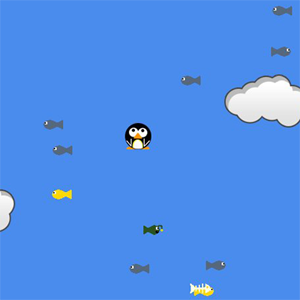
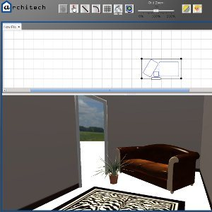
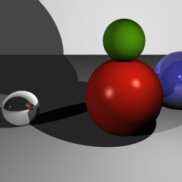

<!DOCTYPE html PUBLIC "-//W3C//DTD XHTML 1.0 Strict//EN"
  "http://www.w3.org/TR/xhtml1/DTD/xhtml1-strict.dtd">
<html xmlns="http://www.w3.org/1999/xhtml">

<head>
  <title>Jonathan Simmonds | Blog and Portfolio</title>
  <link href="../style.css" rel="stylesheet" type="text/css" />
</head>

<body>
<div class="sticky_footer_pre">
  <div class="header_wrapper">
    <div class="header">
      <h1 id="pageid">Programming</h1>
      <h1 id="title1">Jonathan Simmonds</h1>
      <!--<h1 id="title2">Blog and Portfolio</h1>-->
    </div>
  </div>
  <div class="body_wrapper">
    <div class="nav">
      <a href="../index.html"             class="nav">Home</a> / 
      <a href="../profile/index.html"     class="nav">Profile</a> / 
      <a href="index.html"        class="current nav">Programming</a> / 
      <a href="../woodworking/index.html" class="nav">Woodworking</a> / 
      <a href="../design/index.html"      class="nav">Design</a> / 
      <a href="../blog/index.php"         class="nav">Blog</a>
    </div>
    <div class="body">
      <p>
        The larger programming projects I have undertaken, both in my spare time
        and as part of my degree, are listed here.
      </p>


      <h1>RoBin</h1>
      
      <b>Finished:</b> 14-May-2013<br/>
      <b>Description:</b> For my Individual Project (part of my 4th year degree
          program at the University of Bristol) I created a low-power,
          autonomous litter bin. This used a Microsoft Kinect in combination
          with a PandaBoard and an iRobot Create to identify groups of people
          who would potentially generate litter and move towards them; avoiding
          crowds or moving people. While implementing this I investigated
          low-power machine vision solutions in general and how the Kinect might
          be usefully leveraged in combination with the PandaBoard for such an
          application. This was based on the hypothesis that by utilising the
          additional depth data provided by the Kinect it would be possible to
          replace conventional, computationally expensive computer vision
          algorithms with cheaper ones. This allows the use of single-board
          computers, resulting in savings in terms of power consumption.<br/>
      <b>Further Information:</b> Available on the blog,
          <a href="http://jonsim.com/blog/category/university/individual-project/" target="_blank">here</a>.<br/>
      <b>Website:</b> My thesis may be downloaded from
          <a href="downloads/Jonathan_Simmonds_Thesis.pdf">here</a>.
          The project's code is open source and released at
          <a href="https://github.com/jonsim/individual_project" target="_blank">https://github.com/jonsim/individual_project</a>.<br/>


      <h1>Music Tagger</h1>
      <b>Finished:</b> Ongoing<br/>
      <b>Description:</b> This is an ongoing personal project to create a
          program to organise music files. It recursively explores a given
          directory and standardises folder structures, file naming conventions
          and ID3 tags.
          I started the project in C but switched to Python about half way
          through to speed up the development process. As the C version has much
          of the basic functionality I may well complete it once the Python
          version is working.<br/>
      <b>Further Information:</b> Will be available on the blog when I get time.
          For now, some additional information can be found at the website
          (below).<br/>
      <b>Website:</b> The project is open source and released at
          <a href="https://github.com/jonsim/music_tagger" target="_blank">https://github.com/jonsim/music_tagger</a>.<br/>


      <h1>Collision Domain</h1>
      
      <b>Finished:</b> 19-May-2012<br/>
      <b>Description:</b> Collision Domain is a massively multiplayer demolition
          derby game created for a games project in the 3rd year of my degree.
          The project accounted for a third of the total marks for that year and
          was done in a group of 6. Written in C++ it makes use of
          <a href="http://www.ogre3d.org/" target="_blank">Ogre</a>
          (a graphics library),
          <a href="http://bulletphysics.org/wordpress/" target="_blank">Bullet</a>
          (a physics library),
          <a href="http://sourceforge.net/projects/openal-soft/" target="_blank">OpenAL</a>
          (an audio library) and
          <a href="http://www.jenkinssoftware.com/" target="_blank">RakNet</a>
          (a networking library). Our group achieved the highest mark in the
          year for our game.<br/>
      <b>Further Information:</b> Will be available on the blog when I get time.
          For now, some additional information can be found at the website
          (below).<br />
      <b>Website:</b> The project is open source and released at
          <a href="http://code.google.com/p/collision-domain/" target="_blank">http://code.google.com/p/collision-domain/</a>.
          Windows and Linux binaries are available for download.<br />


      <h1>Penguin Jump</h1>
      
      <b>Finished:</b> 22-Oct-2010<br/>
      <b>Description:</b> Penguin Jump is a 1 or 2 player arcade style game
          written in Java. It was made as part of a project in the 1st year of
          my degree and was done in pairs: for which I worked with
          <a href="http://www.rupertb.com/" target="_blank">Rupert Bedford</a>.
          It was written from scratch, not making use of any existing libraries
          and took just 2 weeks to write. It's surprisingly addictive and I
          intend one day to rewrite it as an Android App.<br/>
      <b>Website:</b> The project is open source and released at
          <a href="https://github.com/rupert/play" target="_blank">https://github.com/rupert/play</a>.<br/>


      <h1>Architech</h1>
      
      <b>Finished:</b> 22-May-2011<br/>
      <b>Description:</b> Architech is a room visualisation package allowing
          you to construct a room simultaneously in 2D and 3D, with an array of
          customisable furniture. It was created in the 2nd year of my degree
          for the software engineering project; done in groups of 6. It's
          written in Java and uses
          <a href="http://jmonkeyengine.org/" target="_blank">JME</a>
          for the graphics engine.<br/>
      <b>Website:</b> The project is open source and released at
          <a href="http://code.google.com/p/architech/" target="_blank">http://code.google.com/p/architech/</a>.<br/>


      
      <h1>Ray Tracer</h1>
      
      <b>Finished:</b> 29-Apr-2012<br/>
      <b>Description:</b> This was a project undertaken in the 3rd year of my
          degree as part of a graphics course to create a raytracer completely
          from scratch. The features of the raytracer that we implemented (e.g.
          specular reflections) were up to us. The raytracer is written in C++
          and features a camera model, directional/point/spot lights,
          Lambert/Phong/specular materials, a bounding hierarchy, raytraced
          shadows and multi-threading. I also wrote a program in Python to
          convert files from the common .obj format to my custom format,
          allowing them to be imported to my raytracer.<br/>
      
      
      <h1>Image Segmentation</h1>
      
      <b>Finished:</b> 22-Oct-2010<br/>
      <b>Description:</b> This was a project undertaken in the 3rd year of my
          degree as part of an Image Processing course to create an image
          segmenter using a Gaussian Mixture Model to classify a single point
          from Gaussians derived from class patches. A Naive Bayes classifier
          was used for this, and prior knowledge (created by hand) fed in to
          improve the accuracy. It was written in C++, making use of OpenCV to
          load and display the images.<br/>


      <p style="clear: both;"/>
    </div>
  </div>
  <div class="sticky_footer_spacer"></div>
</div>
<div class="sticky_footer_content">
  This website and all content contained upon it are copyright &copy; Jonathan
  Simmonds 2013-2020, all rights reserved.<br/>
  No part of the website or its content may be reproduced without expressed
  permission.
</div>
</body>

</html>